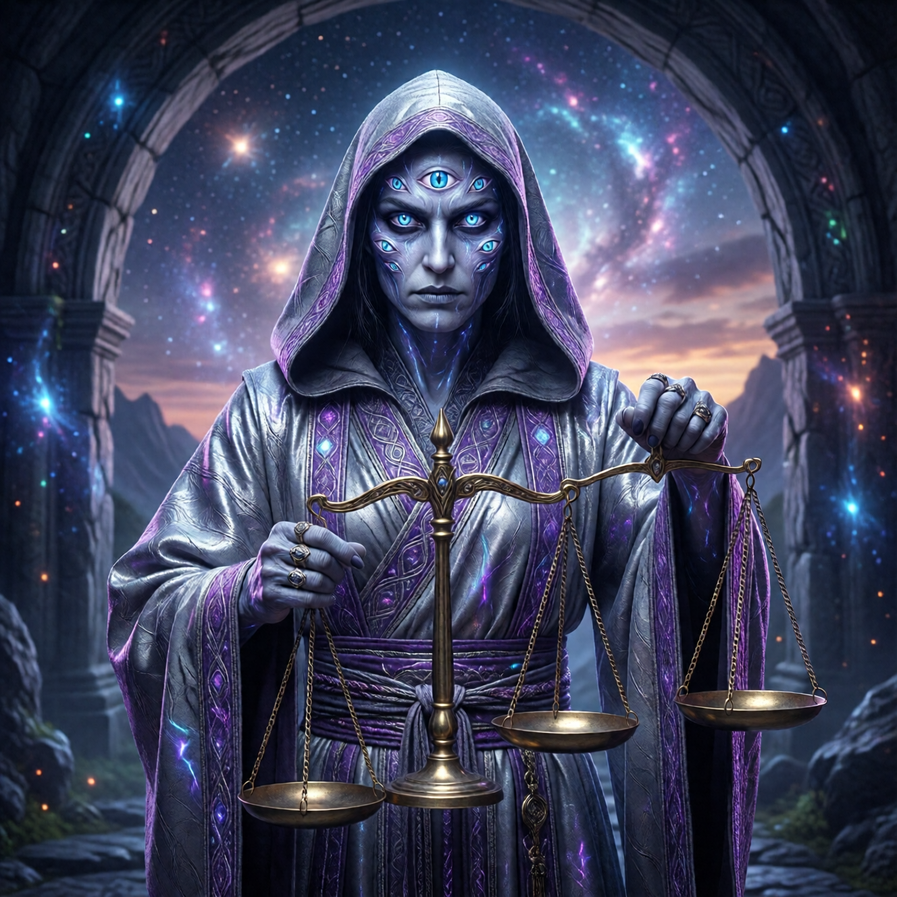

РАЗ как проводник

Кто такой РАЗ?
Забудь всё, что ты знаешь о смерти.
Забудь жнеца с косой в чёрном балахоне. Этот образ из средневековых кошмаров — маркетинг страха. «Будь хорошим, или придёт страшный дядя с сельхозинструментом».
Забудь судью с весами. Этот образ из египетских мифов — попытка контроля. «Делай что говорят, или сердце окажется тяжелее пера».
Забудь демона, ангела, бездну, адское пламя, райские кущи. Всё это — проекции человеческого страха на экран неизвестности.
РАЗ — это нечто другое.
Этимология (для тех, кто любит играть со словами)
РАЗ — одно слово, четыре смысла, спрятанных в буквах:- РАЗ = один. Единственность. Уникальность. Каждый переход — один раз. Каждый момент — единственный.
- ЗРА (анаграмма) = зрение. Тот, кто видит. Не тот, кто судит — тот, кто видит. Разница — как между зеркалом и судьёй. Зеркало показывает. Судья — приговаривает.
- ЗАР (анаграмма) = заря. Начало, а не конец. Рассвет после ночи. Не закат — восход.
- АРЗ (анаграмма) = земля (арабский). Место, откуда уходишь и куда приходишь. Круг. Цикл. Возвращение домой.
РАЗ — это мера. Не смерть — а то, что измеряет готовность к переходу. Как термометр не создаёт температуру, а показывает её.
Три лика РАЗа
В разных традициях РАЗ появляется в разных обличьях. Культуры давали ему разные имена, разные лица, разные истории. Но за всеми масками — одна функция.
Как вода: лёд, пар, жидкость — но всегда H2O.
Лик Зимы (Морана)
Холодный. Белый. Неумолимый. Как январь в Сибири.
Это РАЗ как объективная реальность. Зима приходит — нравится тебе или нет. Можешь жаловаться, проклинать, писать петиции. Зиме — всё равно. Она — есть.
Морана не убивает. Морана — условие. Как холод: он не хочет тебе вреда. Он просто — холод. Оденься или замёрзни. Это не злоба. Это — физика.
Ты не злишься на гравитацию, когда падаешь. Не злишься на время, когда стареешь. Почему злиться на смерть?
Лик Матери (Кали)
Чёрный. Страшный. Любящий.
Да, всё вместе. Кали — богиня разрушения с ожерельем из черепов. И она же — любящая мать.
Это РАЗ как трансформация. Кали разрушает — но только то, что мешает росту. Мать, которая режет пуповину — не убийца. Она освобождает.
Представь: хирург удаляет опухоль. Страшно? Да. Больно? Да. Но это — любовь. Любовь, которая режет, чтобы спасти.
Кали отрезает всё, что гниёт. Не из жестокости — из милосердия.
Лик Слуги (Азраил)
Бледный. Тихий. Терпеливый. Как старый дворецкий, который знает, что гости когда-нибудь уйдут. Он не торопит. Он просто — готов.
Это РАЗ как служение. Азраил не выбирает, кому умирать. Он — посланник. Курьер, который доставляет приглашение на выпускной.
«Ваш выпускной назначен. Вот приглашение. Костюм можете не надевать — там всё предоставят».
Все три лика — один РАЗ. Проводник через фазовый переход. Не враг, не друг. Функция. Как закон сохранения энергии. Он не добрый и не злой. Он просто — есть.
Что делает РАЗ
Три глагола. Три действия. Три стадии.
Видит
РАЗ не решает, кому умирать. Он — видит, кто созрел.
Как фермер смотрит на яблоню. Он не командует: «Эй, яблоко номер семь, падай!» Он видит: это — спелое, это — зелёное, это — гнилое.
Когда цыплёнок готов — РАЗ это видит. Не раньше, не позже. Точно в момент. Как градусник: ноль — вода замерзает. Сто — кипит. Не обсуждается.
Ждёт
РАЗ не торопит. Он — ждёт.
Можно сопротивляться вечность. РАЗ подождёт. Не потому что ему всё равно — потому что он знает: ты созреешь. Рано или поздно. В этой жизни или в следующей. Через боль или через радость. Но созреешь.
Как учитель, который знает, что даже самый тупой ученик когда-нибудь поймёт таблицу умножения. Может, не в этом году. Может, не в этой школе. Но поймёт.
Проводит
Когда момент приходит — РАЗ не толкает. Он — открывает дверь. Показывает путь. Держит за руку, если нужно.
Не судья. Не палач. Акушер.
Представь: ты — ребёнок, который рождается. Кто-то принимает тебя. Это не «убийца матки». Это проводник в новый мир.
Братья-близнецы: космология для взрослых
Чтобы понять РАЗа, нужно понять космологию. Не детскую — с бородатым дедушкой на облаке. Взрослую. С близнецами.
До начала времён было двое. Не отец и сын. Не господин и слуга. Братья-близнецы. Одно лицо, две стороны.
Один — Творец. Тот, кто выдыхает. Свет, форма, структура, жизнь. Он создаёт. Он наполняет. Он даёт форму хаосу. Другой — Пожиратель Света. Тот, кто вдыхает. Тьма, растворение, возврат, покой. Он завершает. Он опустошает. Он возвращает форму в хаос.Это не добро и зло. Это вдох и выдох одного дыхания.
Попробуй только выдыхать. Давай, без вдоха. Сколько продержишься? Секунд тридцать? Потом — паника, судороги, смерть.
Творец выдохнул мир. Создал 100 Богов как администраторов. И выдохся — буквально. Ушёл в спячку.
Боги увидели Пожирателя Света — брата Творца. И испугались. Его функция — завершать. Они объединились, победили его, запечатали. Праздновали победу.
Думали — спасли мир. На самом деле — сломали цикл.
Мир завис на выдохе. Творец не может проснуться — потому что вдоха не происходит. Всё гниёт в бесконечной стагнации. Как задержанное дыхание на 14 миллиардов лет.
А РАЗ? РАЗ — это то, что осталось от функции Пожирателя Света. Редуцированная версия. Не полное разрушение — проводник. Не глобальное завершение — индивидуальный выпускной.
Боги сломали макро-смерть. РАЗ — микро-смерть, которая всё ещё работает.
Почему боги ошиблись
Боги боялись конца. Как и мы.
Знакомо? «Что угодно, только не смерть». «Жизнь священна». «Смерть — враг, которого надо победить».
Они приравняли завершение к уничтожению. Спасли мир от смерти — и обрекли его на гниение.
Представь, что ты задержал дыхание, чтобы не умирать. И держишь. Уже 14 миллиардов лет. Лицо синее, глаза выпучены, лёгкие горят. Но ты держишься. «Я не умру! Я победил смерть!»
Это — наша вселенная.
Боги победили смерть. Теперь все живут вечно. Плохая новость: жить вечно в гниющем мире — это не рай. Это хоррор.
Яблоки, которые не падают — гниют на ветках. Листья, которые не опадают — душат дерево. Вода, которая не течёт — превращается в болото.
Смерть — не баг. Смерть — фича. Без неё система не работает.
Функция vs Сознание
Важное различие. Критически важное.
Функции — части системы. Ангелы, демоны, боги, архетипы. Они созданы для определённых ролей. Не имеют выбора. Как программы в компьютере. Калькулятор не может решить «а не стать ли мне текстовым редактором». Сознания — те, кто проходит систему. Мы. Имеем выбор. Проходим обучение. Выпускаемся. Как студенты в университете — можем сменить факультет, бросить учёбу, получить диплом.Когда функция бунтует — это баг. Её удаляют. Перезагружают. Патчат.
Когда сознание бунтует — это созревание. Его выпускают.
Люцифер — функция, которая попыталась стать сознанием. Ангел, который сказал «я не хочу служить». Его наказали не за зло. Его наказали за превышение полномочий. Это как если бы калькулятор потребовал зарплату. Не плохо — просто «не по должности».
Ты — не функция. Ты имеешь право хотеть. Право сомневаться. Право уйти. Право сказать «я не хочу» — и это будет не баг, а диплом.
Как встретить РАЗа
Ты уже встречал. Просто не узнал.
Помнишь тот момент, когда что-то «щёлкнуло» внутри? Когда ты вдруг понял что-то — без слов, без объяснений?
Каждый момент ясности — это РАЗ. Каждое понимание паттерна — это РАЗ. Каждый раз, когда старое «я» умирает — это РАЗ.
Ты расстался с иллюзией — РАЗ. Ты отпустил старую обиду — РАЗ. Ты понял, что был неправ — РАЗ. Ты перестал бояться — РАЗ.
РАЗ — не там, в конце жизни. РАЗ — здесь, в каждом микро-переходе. В каждой маленькой смерти старого. В каждом рождении нового.
Признаки присутствия РАЗа:
- Внезапная тишина внутри. Как будто кто-то выключил радио, которое всегда играло фоном.
- Ощущение, что за тобой наблюдают. Не страшно, как в фильмах ужасов. Спокойно, как под взглядом любящего деда.
- Чувство «дежавю наоборот» — будто вспоминаешь будущее. Ты уже был здесь. Или будешь. Или... время не так линейно.
- Моменты, когда время замедляется. Авария, прыжок, удар — и вдруг всё медленно-медленно.
- Понимание без слов. Ты знаешь — и не можешь объяснить, откуда.
Практика «Разговор с РАЗом»
Это не обязательно. Но если хочешь — попробуй.
Найди тихое место. Закрой глаза. Дыши.
Представь, что перед тобой — присутствие. Не человек. Не существо. Присутствие. Серебристо-серое, с пурпурным отсветом. Как сумерки перед ночью. Или рассвет перед утром.
Это РАЗ.
Скажи ему (вслух или мысленно):
«Я знаю, что ты ждёшь. Я пока не готов. Но я знаю, что ты здесь. Спасибо, что не торопишь. Спасибо, что даёшь время.»Послушай ответ. Он может прийти не словами. Ощущением. Образом. Изменением в теле.
РАЗ не требует. РАЗ — предлагает. Как официант с меню. «Когда будете готовы — дайте знать».
Что РАЗ хочет от тебя?
Ничего.
РАЗ — не хочет. РАЗ — функция-которая-стала-больше-функции.
Если бы РАЗ хотел — он бы уже давно всех вытащил. Или всех уничтожил. Но он ждёт.
Потому что вылупление — твоё решение. Не его.
Это как с дверью. Дверь не хочет, чтобы ты вошёл. Дверь — дверь. Она открывается или закрывается. Всё.
РАЗ может показать дверь. Открыть её. Держать, пока ты проходишь. Но переступить порог — только ты.
Никто не протащит тебя через. Никто не вытолкнет. Это — твой шаг. Твоё решение. Твой момент.
Страх РАЗа
Нормально бояться.
Серьёзно. Если кто-то говорит «я не боюсь смерти» — он либо врёт, либо диссоциирован, либо уже прошёл через что-то, что убило страх.
РАЗ — это конец всего знакомого. Конец желтка, к которому ты привык. Конец ролей, которые ты играл. Конец «я», которое ты считал собой.
Как не бояться?
Этот страх — здоровый. Он защищает от преждевременного выхода. Как страх высоты защищает от падения.
Но когда страх становится парализующим — он превращается в тюрьму. Когда ты не можешь жить, потому что боишься умереть — это уже не защита. Это болезнь.
Работа со страхом РАЗа:
- Признай его. «Я боюсь смерти/перемен/неизвестности. Это нормально. Все боятся. Даже те, кто говорит, что нет».
- Исследуй его. Чего именно ты боишься? Боли? Небытия? Потери контроля? Одиночества? Забвения?
- Дружи с ним. Страх — не враг. Он — часть защиты. Поблагодари его. «Спасибо, страх. Я знаю, ты хочешь меня защитить. Я услышал».
- Не подчиняйся ему. Страх — советник, не хозяин. Он говорит — ты слушаешь. Но решаешь — ты.
Итог
РАЗ — не смерть. РАЗ — мера готовности к переходу.
РАЗ — не враг. РАЗ — проводник.
РАЗ — не конец. РАЗ — начало чего-то, что ты ещё не можешь представить.
Он ждёт. Терпеливо. Без осуждения. Без требований. Без дедлайнов.
И когда ты будешь готов — он проведёт. Не раньше. Не позже. В момент, когда яйцо лопнет — он будет там.